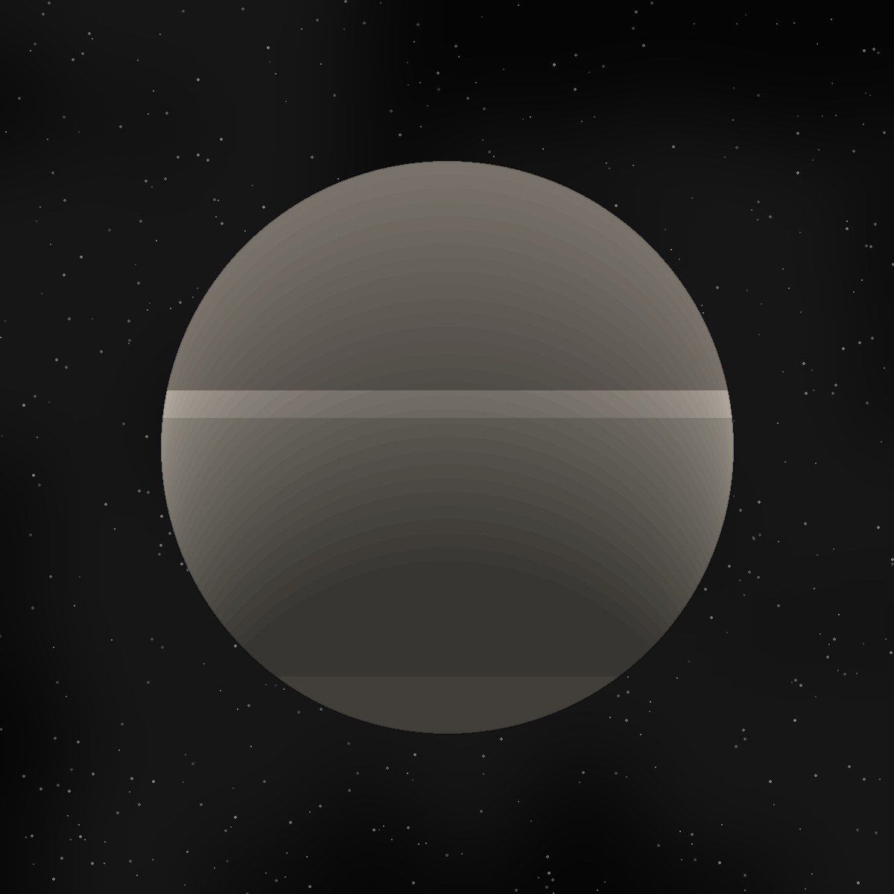
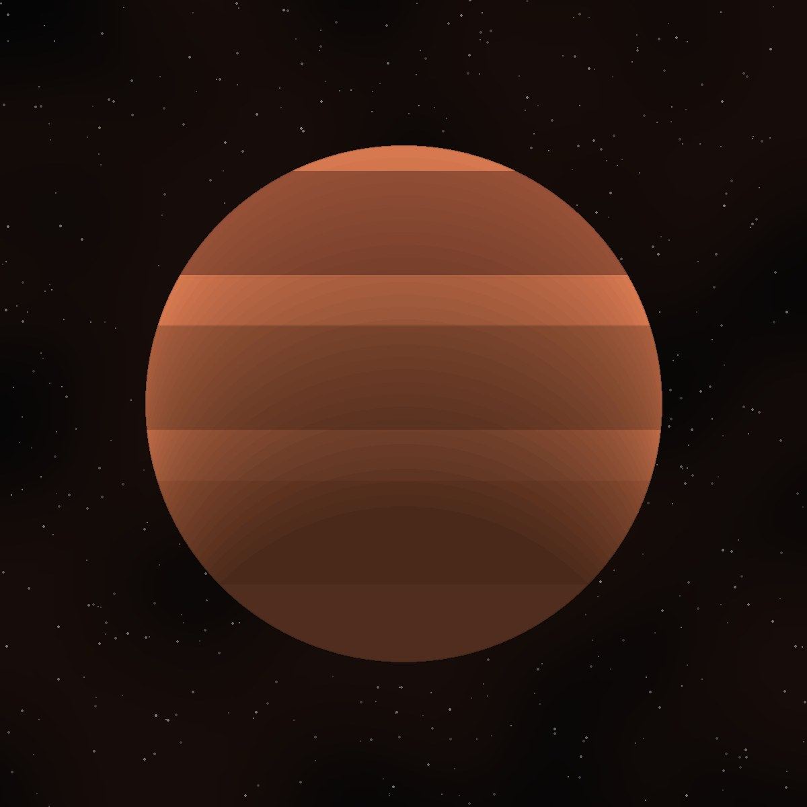
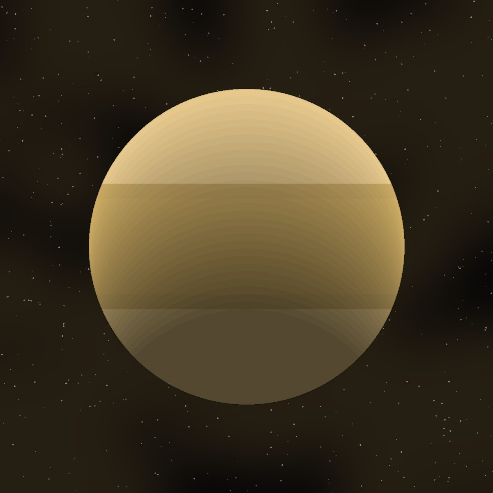
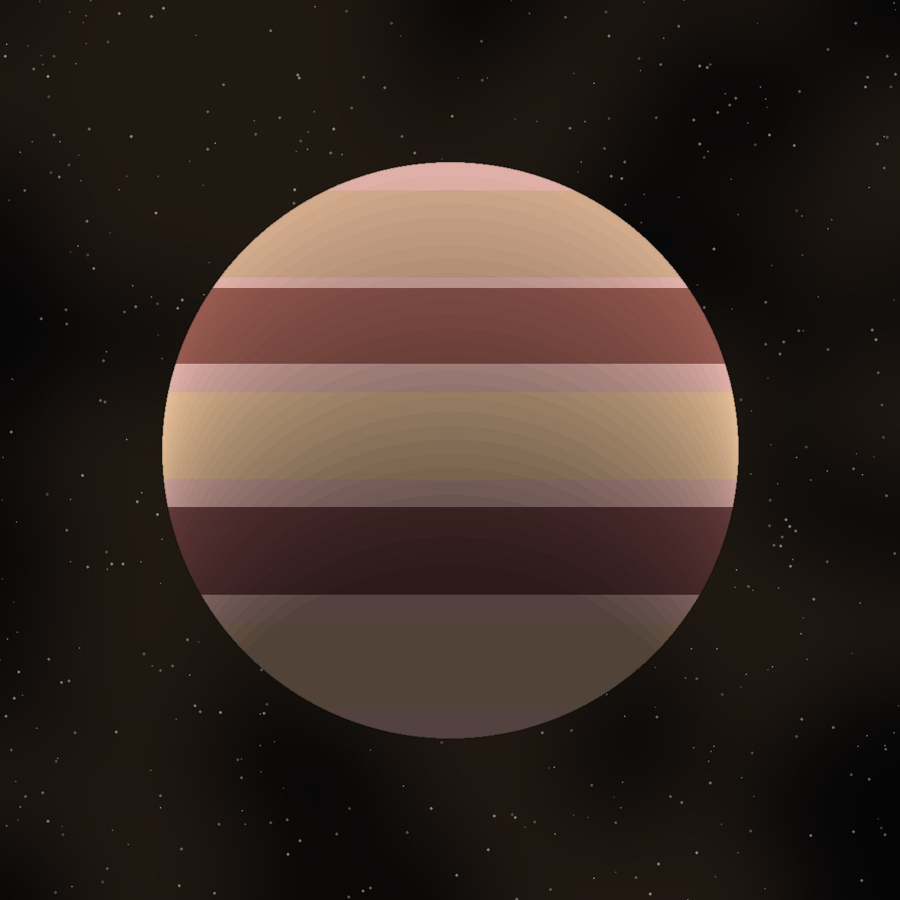
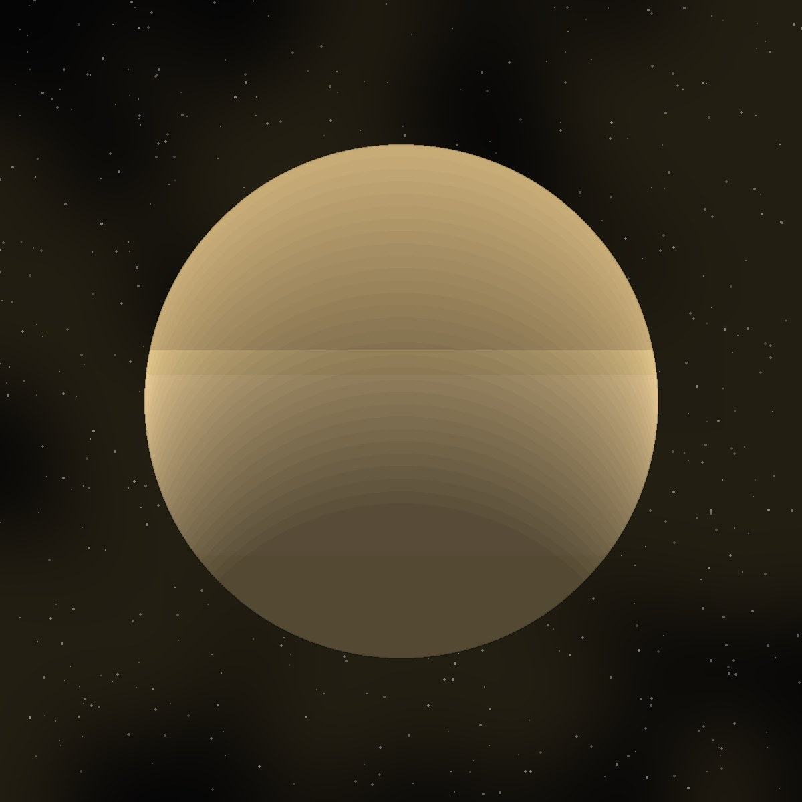
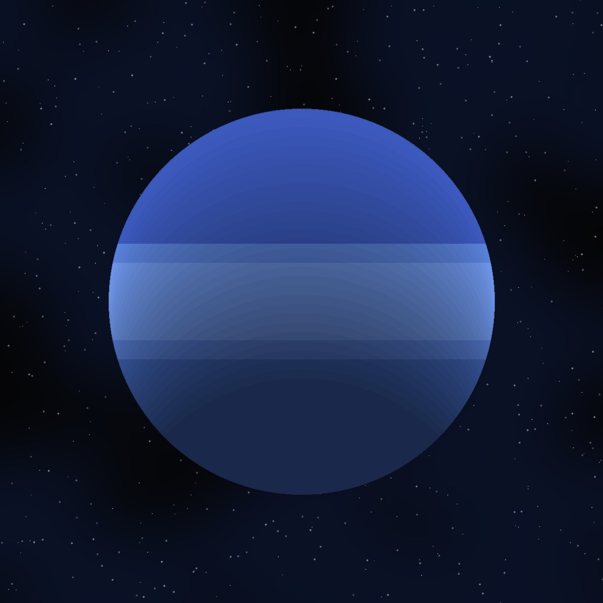

2018 · ESA / JAXA
BepiColombo
Dos orbitadores en uno para el mundo más rápido y el más difícil de alcanzar del sistema.
En rutaAvanzamos por el sistema sacando la mirada de un único instrumento: cartografiamos cada mundo, medimos cada atmósfera y registramos el pulso de sus lunas. Del roce del perihelio al límite helado de Plutón, la exploración es una sola línea continua.
Aquí reunimos el estado del arte de ese viaje: el catálogo de planetas, el banco de misiones que desplazan la frontera y los datos que el observatorio reúne cada noche.

De los sobrevuelos pioneros a los róvers que perforan la superficie, cada misión aporta su capítulo a un mismo proyecto: leer el sistema a corta distancia y devolvernos los datos.

Dos orbitadores en uno para el mundo más rápido y el más difícil de alcanzar del sistema.
En ruta
Radar de apertura sintética para cartografiar la superficie bajo el manto venusiano.
Misión previstaRecolecta muestras que un día volverán a la Tierra buscando señales de vida pasada.
Activa
En órbita polar sobre la tormenta más grande conocida, midiendo su campo magnético.
Activa
Trece años en el sistema de anillos y Titán, el mayor archivo de ciencia saturniana.
Finalizada
Un sobrevuelo para el último gran planeta: el hielo profundo de Neptuno y Tritón.
PropuestaCuatro siglos de mirar el cielo con lentes cada vez más precisas — y de darnos cuenta de que el catálogo siempre estaba incompleto.
El telescopio revela las lunas de Júpiter y derrumba el geocentrismo.
Urano, el primer planeta descubierto «de noche», con telescopio.
Neptuno encontrado con la punta del lápiz: cálculo puro.
Plutón aparece tras años de fotografiar el zodíaco.
La gran gira: un sobrevuelo encadenado de los cuatro gigantes.
El infrarrojo profundo vuelve a reescribir el atlas del cielo.
Sigue el perihelio, recibe los datos del observatorio y prepárate para la próxima ventana de lanzamiento.